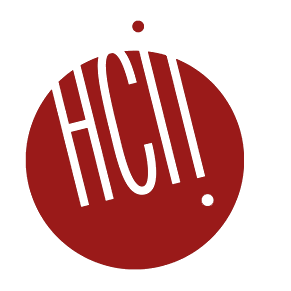
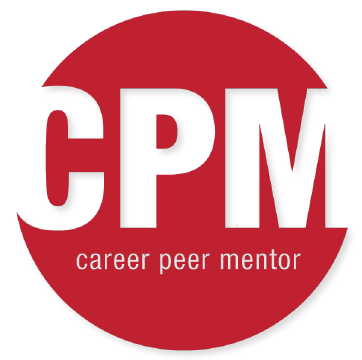
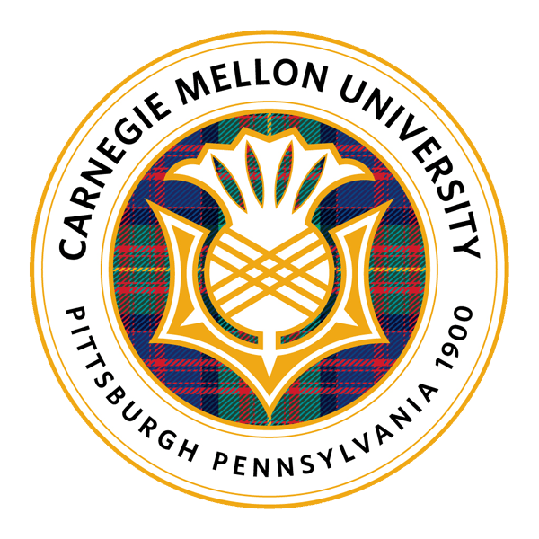
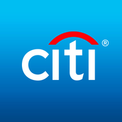
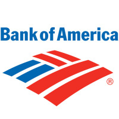

I have been a research assistant for Amy Shannon Cook and Anita Delahay, Ph.D. candidates in HCI and psychology, respectively. As a research assistant, I have helped with creating test materials, running participants, and analyzing participant data using Excel to see whether or not watching others play educational games can help one learn material. The research tested under four different conditions to see which learning environment would lead to the most learning. Participants were either alone or with a partner, and they watched either an "expert" video or a tutor-tutee video.

As a Career Peer Mentor (CPM), I work closely with career consultants and other CPMs to provide resources for first-year students and to promote student engagement of the Career and Professional Development Center. I hold one-on-one appointments, as well as weekly student dormitory workshops, to help students explore career options and create strategies leading to post-graduation success in their desired industry.
For more information on my position, click
here.

I was a research assistant under Dr. Jason Howell, the undergraduate department head for Carnegie Mellon's Mathematical Sciences Department. My research consisted of two different problems. For the first half of my research, my team and I were divided into subgroups to estimate the smallest value of a specific tri-diagonal matrix. Later on, my team and I analyzed MATLAB code to improve the efficiency and accuracy of Non-negative matrix factorization.

I am one of eighteen students selected from over 200 applicants to participate in a 5-week virtual mentoring and training program. Through the program, I am learning about select technology-related topics such as data analytics, fraud detection, and machine learning. In addition, I am learning more about diversity initiatives that the bank is taking as well as the overall work culture at Citi.

I was one of thirty-four students selected out of a pool of applicants nationwide selected to participate in a two-day long reception at Bank of America's (BoA) Headquarters in Charlotte, NC. During these two days, I learned about the different lines of business at BoA, the company's internship and rotational program opportunities, and how to apply my background in STEM to a career in financial services. In addition, I participated in networking receptions with other participants and BoA associates, mock interviews, and resume feedback sessions with recruiters.
I was one of thirty undergraduate sophomores nationwide selected to attend a week-long analytics program at Capital One's Plano, TX campus. I attended training sessions and workshops to learn about business analytics at Capital One, and I had the opportunity to network with Capital One associates and other sophomores. Additionally, I participated in a three-day team case competition, where my six-person team and I prototyped a budgeting app called BudgetWise and calculated its potential benefits to consumers and Capital One.